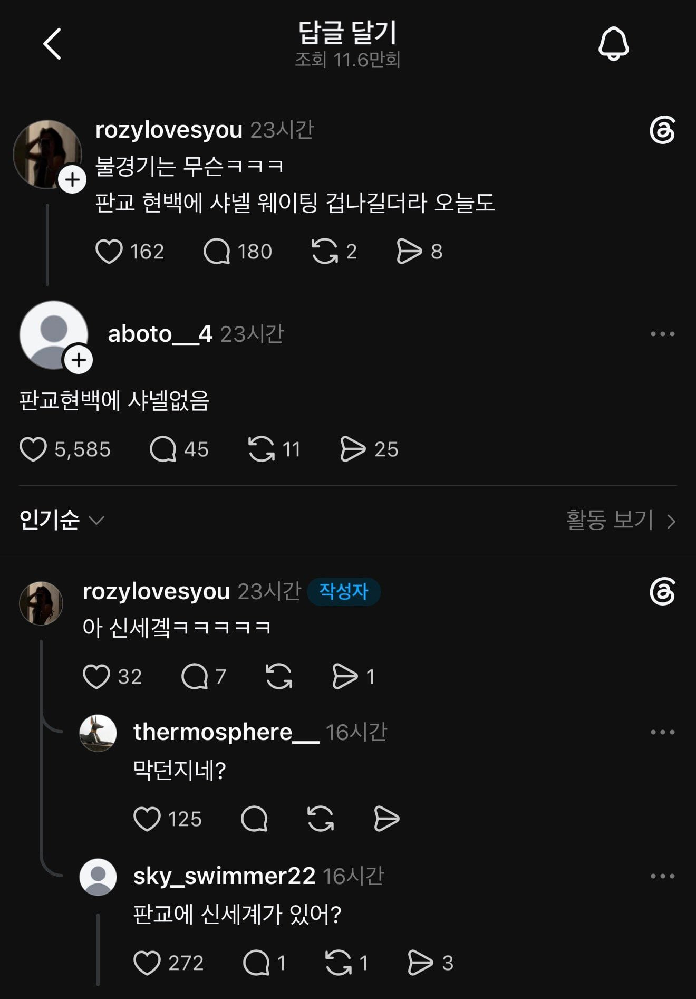

불경기는 무슨 ㅋㅋ 판교 현백 샤넬 웨이팅 겁나김 ㅋㅋ
댓글
요새 명품 트렌드가 양극화라 잘팔리는 애들은 지금도 지점마다 물량내주기 힘든데 더 늘리는건 그만큼의 이득이 있어야 하는 상황
ㄹㅇ 쓰레드 쓰는사람 많나
저거 99퍼가 개씹구라글 밖에없는거같은데
알아
그것이 쓰레드니까
트위터에서 씹덕 농도 빠진 게 쓰레드임
저긴 속이는자만 있는 뭐 그런데냐 ㅋㅋ
허언증인가
도대체 왜 저럴까
주작을 떠나서
불황이어서 명품 더 사는 심리도 있음
몽블랑도 명품임?
아 명품이지요
아님
맞지 않을까?
양극화가 심해지는거지
글 안봤지?
독도에 스시집 웨이팅 개많아
왜 저러는거지
그저 개좆병신
찍는 족족 틀리는것도 재주긴 한데
근데 진짜 웨이팅을 하는 정도의 명품 품목들은 일반인(?)들도 돈 모아서 살 수 있는정도라 생각함
몇년을 목표로 모아서 몇백짜리 살수았다고 생각함
쉽지않은 금액이라는거랑 못사는 몇천짜리금액은 다른거같음
몇천짜리 살만한 재력이면 웨이팅없이 초대장부터 보난다며
그사람들은 불경기고뭐고 걍 그사세임
웨이팅해서 명품산다는걸로 비난할 거리로 구라까지 피는건 진짜 개한심
신강 샤넬은 줄서던데
주말 잠실 롯데몰 명품관에 줄 늘어서긴함
요즘 웨이팅 번호만 적고 보내던데
웨이팅 많은건 팩트임~
되팔이할려고 줄선거 아님?
난 솔직히 사람들 명품사는거 왜 욕하는건지 이해가 안됨
근데 판교 현백에 샤넬 없는게 의아하긴 함
롤렉스도 있고 에르메스도 있고 거기 1층 명품관들 항상 사람 미어터지던데, 둘이서 협상이 잘 안되는건가...